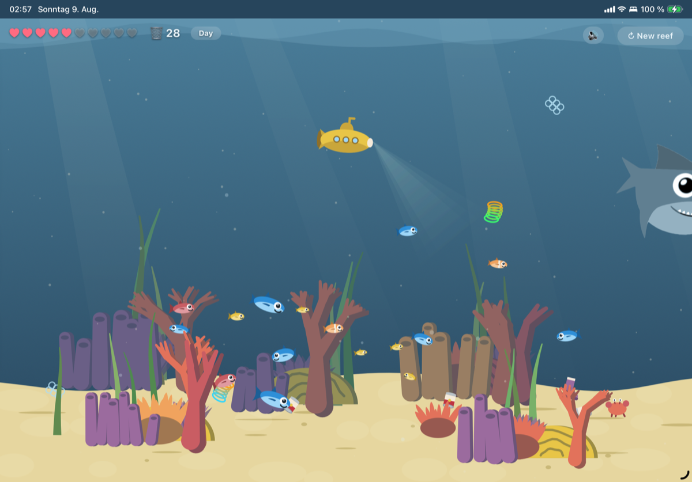
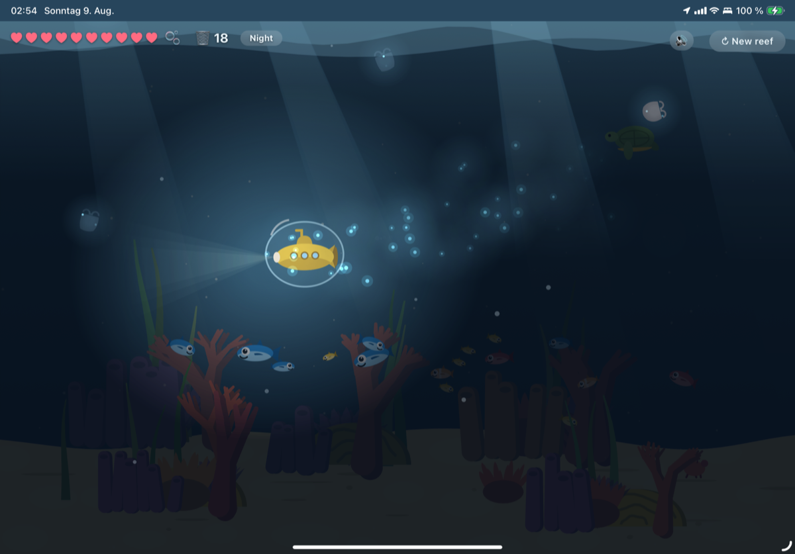
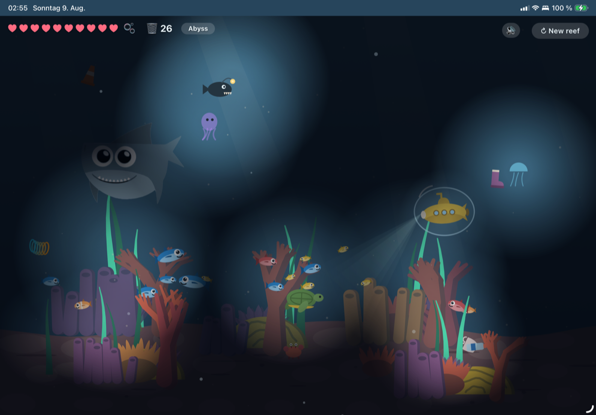

Mugging the mugger
The Fish Slop saga: 1. Hosting Fish Slop · 2. Mugging the mugger · 3. Overachiever · 4. Friendly Competition
One night I sat looking at the cartoon reef I'd built and decided it should be a game.
Everything since has been an argument about details. A crab got away with a bottle, and that could not stand. The trash was mine.
One big sentence that kicked it off
The reef was a web page. Fish, coral, a shark I could drag around with the cursor. Nothing to do in it, which was the point.
Then it wasn't the point anymore.
I dictated the whole game to Claude — the AI assistant I write code with — in one sentence, the way I talk to my computer at eleven at night: you pilot a little submarine that goes left and right and presses space to rise, plastic drops from the top and slowly sinks, there's bottles and bags and traffic pylons, avoid the fish, a turtle swims for any plastic bag so you have to beat it there, a fish costs one of your ten hearts, a shark costs five, and every ten pieces of trash gives one heart back.
Ten minutes later I was playing it.

And then I was directing it.
Everything after that — every evening since — has been small. Not features. Annoyances, mostly. Things I noticed while playing and wanted gone.
The tire looked out of place
The first batch of trash had a car tire in it. It was fine. It was also wrong — too heavy, too roadside, not the litter you find in water. I swapped it for a flip-flop.
Then I wanted more variety, so I started describing objects out loud like a man ordering from a catalogue that doesn't exist. A yellow rubber duck. A can with a grey ribbed body and a red label — a tomato soup can, but with no writing on it, because writing would make it an advert. A coffee cup with a trapeze-shaped body, in grey, brown or green, with a red, beige or white lid. And later, a squeaky spiral thing — neon yellow, orange, blue and green, gradient down its length, five or six coils.
Ten kinds of litter now, each falling at its own speed. The bag drifts and swings. The can plummets and barely wobbles; if you miss it early you don't get it at all.
Somewhere in there I noticed only some of them had colour variants, and asked whether the pylon and the duck should get them too.
Then I answered my own question: no. The bottles and bags show up dozens of times a run, so without variation you'd see the repeat. The duck appears once in a blue moon. If there were three ducks, spotting one would stop meaning anything. Rare things want a single unmistakable shape. Common things want variety so the eye doesn't catch on the sameness.
You can just swim left and right on the ground
The problem with a game about catching falling things is the floor.
Everything ends up down there. The fish keep their distance from the sub, so the seabed was a safe lane — park at the bottom, sweep left and right, collect. No risk, no thought.
So: crabs. They scuttle in from the left or right edge, grab the first piece of trash they find, and haul it off-screen. Touch one and you lose a heart. Let one escape with your bottle and you lose one too.
That fixed the floor and broke something else. Two crabs walked into each other and just stood there, nose to nose, forever. A standoff. Neither would give way.
Now a crab carrying trash has right of way, and the other one turns around.
Then I asked for the fish to scatter when a crab approaches, which sounds cosmetic and isn't — crabs sweeping along the bottom push the fish upward and outward, so the whole lower half of the screen stays stirred up. The safe lane never comes back.
The last loophole was the turtle. It swims for a plastic bag, and if you snatch the bag first, you rescued it and get a heart. I noticed I was getting three hearts from what felt like one turtle. I was: the turtle whose bag I'd stolen would calmly pick a new bag and hunt that one, paying out again each time. Now a rescued turtle heads for the surface and leaves. One turtle, one heart.
The krill were real
Not everything came from annoyance. Some of it came from water.
At night in the game, the submarine leaves a trail of tiny glowing specks — plankton, lit up by the disturbance, hanging in the water where you were rather than following you. They fade a second or two after you've moved on, so your own path stays drawn behind you.
That happens. I've seen it on a night dive: you sweep a hand through black water and it lights up around you, cold and blue-green and completely silent. Nothing about it looks like biology. I wanted it in the reef because it was real, not because the game needed more sparkle.
And then it became part of the game by accident.
I asked for one or two of the same glowing specks to cling to the trash drifting in the upper part of the screen at night. Just a hint. A twinkle high up where it's too dark to see shapes.
That twinkle tells you something's coming, and roughly where. Night went from "harder because you can't see" to "harder unless you read the water." I didn't design that. I asked for a thing I'd seen in the sea, and it turned into the level's radar.

Into the abyss
Deeper still, the game stops drawing waves on the water's surface — you're far too deep to see them, and drawing them was a small lie. The kelp glows down here, but not uniformly: half the strands at half brightness, because a field of identical lamps looks like decoration and a field of uneven ones looks alive.
The rest of the light is alive too. Down where it's genuinely pitch black I added anglerfish and jellyfish, each carrying its own small lamp through the dark — the only things that light the place at all.
They also sting. Every one of those soft glows is two hearts if you swim into it, which means the abyss lights itself with the exact things you're meant to avoid.

The overachiever's bubble
Then came the mugging. Colliding with a crab always cost you a heart — but if the crab is carrying something, you now take the pinch and the loot. The stolen bottle scores as if you'd caught it. So a loaded crab isn't only a hazard, it's a decision: pay a heart now and maybe get it back, or let it walk and pay the heart anyway when it leaves the screen.
The bubble isn't mine at all.
Rescuing a turtle gives you a heart — unless you're already at ten out of ten, in which case the reward quietly evaporated. That bothered me, but I had no idea what to do about it, so I asked the question instead of giving an instruction: what should happen when I earn a heart I can't hold?
I got three options back. The first one came recommended: bank it as a shield.
I can't tell you what the other two were. I took the first one and never looked at the rest.
So now the overflow becomes a bubble. It wobbles around the submarine and swallows exactly one hit.
It bursts with a little plop.
Then it all had to happen twice
Somewhere in the middle of this, the game stopped being one thing.
It's now also an iPhone app — not the web page in a picture frame, but the whole scene rebuilt for the phone. And it has sound, made from scratch rather than from recordings: rushing water, a deep drone, bubbles, and every so often something distant and whale-shaped in the dark.
Which means every one of those small evening annoyances has to be fixed twice, in two programming languages, by two separate Claude chats that cannot see each other's work. I spent a lot of last night as a courier: the web version fixed the coral bottoms — find that change and copy it here.
A shark takes five hearts but only made one slashing sound, which felt thin. The phone version fixed it first: five slashes, eighty milliseconds apart, so a shark hit sounds like a shark hit. An hour later the web version copied it back.
Each saved change quotes the other one's reference number. They read like letters.
You can try this
There's no goal. There's no design document. There was never a plan past that first dictated sentence.
What's there instead is a record of small irritations, each one fixed the evening I felt it.
You can play it in a browser: scriptease.github.io/underwater-reef/game.html. Sound on, if you have a minute — the deeper you go, the more muffled everything gets.
Watch the crabs. One of them has your bottle.
And rescue a turtle while you're on full hearts, so you're carrying the bubble.
Then: what happens if you hit the shark with it?